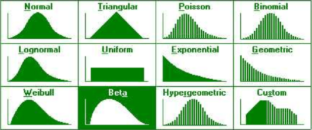

Descriptive Analytics
Normality Test in Python
Normality test is statistical technique used to determine whether a sample data has been drawn from a normally distributed population. It is an important part of descriptive statistics. Before reporting any statistics such as mean, or conducting statistical test such as correlation, t-test, ANOVA, or regression, normality test is paramount. If the data does not follow normal distribution or has an outlier, reporting mean might be misleading as it is sensitive to outliers. If the assumption of normality is not met, the results will be invalid for tests that assume normality and therefore non-parametric alternatives were adopted.
Normal distribution, also known as Gaussian distribution, is the most important statistical probability distribution for independent random variables. Most researchers will recognize it as the familiar bell-shaped curve present in statistical reports. Normal distributions are appropriate for continuous variables. It is a probability distribution that is symmetric about the mean, i.e., the right side is a mirror image of the left side, indicating that the data near the mean occur more frequently than those at a distance from the mean. The area under the normal distribution curve represents the probability, and the total area under the curve sums up to one. In a perfectly normal distribution, the mean, median, and mode values are the same, and they indicate the peak of the curve.
Methods of testing normality
There are several techniques for checking the normality of the dataset. These techniques can be described into two broad categories:
- Graphical tests - These are methods for plotting the data and qualitatively evaluating whether the data looks Gaussian. This method is very subjective an thus calls for statistical test if the distribution is not clear.
- Statistical tests - These are methods that calculate statistics on the data and quantify how likely it is that the data was drawn from a Gaussian distribution.
Let's start with graphical test
Here we are going to look at three common graphical test for normality
-
Histogram - commonly used plot to quickly check the distribution of a sample of
data.
In the histogram, the data is divided into a pre-specified number of groups called bins. The data is
then sorted into each bin and the count of the number of observations in each bin is retained.
The plot shows the bins across the x-axis maintaining their ordinal relationship, and the count in
each bin on the y-axis.
A sample of data has a Gaussian distribution if the histogram plot is showing the familiar bell
shape. This can further be visualized using gaussian distribution density curve.
A histogram can be created using the matplotlib function in Python which by default estimates the
number of bins from the data sample.
See the code snippet for drawing histogram to test the normality of selected numerical variables in
our data.
# For multiple histogram with density curveConclusion - From the plot, overall variable has approximately bell shape with all other variables extremely different from bell curve. Therefore, we can conclude that, of course subjectively, overall variable is normally distributed while other variables are not from normal population.
-
Box Plot - or boxplot (also known as a box and whisker plot) is a type of chart
often used in explanatory data analysis. Box plots visually show the distribution of numerical data
and skewness by displaying the data quartiles (or percentiles) and averages.
Box plots show the five-number summary of a set of data: including the minimum score, first (lower)
quartile, median, third (upper) quartile, and maximum score.
When the median is in the middle of the box, and the whiskers are about the same on both sides of
the box, then the distribution is symmetric. And data is normally distributed.
When the median is closer to the bottom of the box, and if the whisker is shorter on the lower end
of the box, then the distribution is positively skewed (skewed right). This means there are more
data points above the median.
When the median is closer to the top of the box, and if the whisker is shorter on the upper end of
the box, then the distribution is negatively skewed (skewed left). This means there are more data
points below the median.
See the code snippet for drawing boxplot to test the normality of selected numerical variables in
our data.
# Box plot with matplotlibConclusion - From the plot, overall variable has approximately median line at the center of the box implying symmetry with nitrogen skewed to the left, and potassium and phosphorous skewed to the right. Therefore, we can conclude that, of course subjectively, overall variable is normally distributed while other variables are not from normal population.
-
Quantile-Quantile Plot - Q-Q plot, or QQ plot for short.
This plot generates its own sample of the idealized distribution that we are comparing with, in this
case the Gaussian distribution. The idealized samples are divided into groups (e.g. 5), called
quantiles. Each data point in the sample is paired with a similar member from the idealized
distribution at the same cumulative distribution.
The resulting points are plotted as a scatter plot with the idealized value on the x-axis and the
data sample on the y-axis.
A perfect match for the distribution will be shown by a line of dots on a 45-degree angle from the
bottom left of the plot to the top right. Often a line is drawn on the plot to help make this
expectation clear. Deviations by the dots from the line shows a deviation from the expected
distribution.
See the code snippet for drawing Q-Q plot to test the normality of selected numerical variables in
our data.
# Q-Q plot in MatplotlibConclusion - From the plot, overall variable has data points approximately a long the normal line implying normality with all other variables' points far from the the line. Therefore, we can conclude that, of course subjectively, overall variable is normally distributed while other variables are not from normal population.
Let's move on to statistical test
Here we are going to look at five common statistical test for normality
-
Shapiro-Wilk test - evaluates a data sample and quantifies how likely it is that
the data was drawn from a Gaussian distribution, named for Samuel Shapiro and Martin Wilk.
In practice, the Shapiro-Wilk test is believed to be a reliable test of normality, although there is
some suggestion that the test may be suitable for smaller samples of data, e.g. thousands of
observations or fewer.
The shapiro() SciPy function will calculate the Shapiro-Wilk on a given dataset. The function
returns both the W-statistic calculated by the test and the p-value.
See the code snippet for calculating W-statistics and p-value to test the normality of selected
numerical variables in
our data.
# Shapiro-Wilk # The first thing is to make case column an index # So that all other columns are numeric, whose normality we wanna test # This has been done while reading the data # Ho: Sample is from the normal distributions.(If P>0.05 fail to reject null hypothesis and report sample is from the normal population) # Ha: Sample is not from the normal distributions.(If p<'0.05 reject null hypothesis and report sample is not from normal population)Result
['Nitrogen %ge'] statistics 0.8977869153022766 p-value 1.1142337825731374e-06 Reject null value and report that there is enough evidence that sample is not from normal distribution. ['Phosphorous %ge'] statistics 0.9156366586685181 p-value 8.320888809976168e-06 Reject null value and report that there is enough evidence that sample is not from normal distribution. ['Potassium %ge'] statistics 0.8811166286468506 p-value 2.024085432594802e-07 Reject null value and report that there is enough evidence that sample is not from normal distribution. ['Overall %ge'] statistics 0.9807282090187073 p-value 0.1514234095811844 Fail to reject null hypothesis and report that the sample is from normal distribution.Conclusion - Comparing p-value with alpha, all p-values are less than alpha except for overall variable. Therefore, we can conclude that there is sufficient evidence that sample data does not come from normal population except for overall variable.
-
Kolmogorov-Smirnov test - This is a non-parametric test i.e., it has no assumption
about the distribution of the data. Kolmogorov-Smirnov test is used to understand how well the
distribution of sample data conforms to some theoretical distribution. In this, we compare between
some theoretical cumulative distribution function, (Ft(x)), and a samples’ cumulative distribution
function , (Fs(x)) where the sample is a random sample with unknown cumulative distribution function
Fs(x).
See the code snippet for calculating ks-statistics and p-value to test the normality of selected
numerical variables in
our data.
# Kolmogorov-Smirnov # Ho: Sample is from the normal distributions.(If P>0.05 fail to reject null hypothesis and report sample is from the normal population) # Ha: Sample is not from the normal distributions.(If p'<'0.05 reject null hypothesis and report sample is not from normal population)Result
['Nitrogen %ge'] statistics 1.0 p-value 0.0 Reject null value and report that there is enough evidence that sample is not from normal distribution. ['Phosphorous %ge'] statistics 1.0 p-value 0.0 Reject null value and report that there is enough evidence that sample is not from normal distribution. ['Potassium %ge'] statistics 1.0 p-value 0.0 Reject null value and report that there is enough evidence that sample is not from normal distribution. ['Overall %ge'] statistics 1.0 p-value 0.0 Reject null value and report that there is enough evidence that sample is not from normal distribution.Conclusion - Comparing p-value with alpha, all p-values are less than alpha. Therefore, we can conclude that there is sufficient evidence that sample data does not come from normal population for all variables. Note the difference in the result foe S-W and K-S.
-
Anderson-Darling test - is a statistical test that can be used to evaluate whether
a data sample comes from one of among many known data samples, named for Theodore Anderson and
Donald Darling.
It can be used to check whether a data sample is normal. The test is a modified version of a more
sophisticated nonparametric goodness-of-fit statistical test called the Kolmogorov-Smirnov test.
A feature of the Anderson-Darling test is that it returns a list of critical values rather than a
single p-value. This can provide the basis for a more thorough interpretation of the result.
The anderson() SciPy function implements the Anderson-Darling test. It takes as parameters the data
sample and the name of the distribution to test it against. By default, the test will check against
the Gaussian distribution (dist=’norm’).
See the code snippet for calculating statistics and p-value to test the normality of selected
numerical variables in
our data.
# Anderson-Darling tets # Ho: Sample is from the normal distributions.(If P>0.05 fail to reject null hypothesis and report sample is from the normal population) # Ha: Sample is not from the normal distributions.(If p'<'0.05 reject null hypothesis and report sample is not from normal population)Result
['Nitrogen %ge'] AndersonResult(statistic=3.0834311988360383, critical_values=array([0.555, 0.632, 0.759, 0.885, 1.053]), significance_level=array([15. , 10. , 5. , 2.5, 1. ]), fit_result= params: FitParams(loc=12.48, scale=1.7551079853969214) success: True message: '`anderson` successfully fit the distribution to the data.') Reject null value at 5.0 % significance level and report that there is enough evidence that sample is not from normal distribution. ['Phosphorous %ge'] AndersonResult(statistic=2.6423425607630264, critical_values=array([0.555, 0.632, 0.759, 0.885, 1.053]), significance_level=array([15. , 10. , 5. , 2.5, 1. ]), fit_result= params: FitParams(loc=12.37, scale=1.618422976014901) success: True message: '`anderson` successfully fit the distribution to the data.') Reject null value at 5.0 % significance level and report that there is enough evidence that sample is not from normal distribution. ['Potassium %ge'] AndersonResult(statistic=3.8205122345453617, critical_values=array([0.555, 0.632, 0.759, 0.885, 1.053]), significance_level=array([15. , 10. , 5. , 2.5, 1. ]), fit_result= params: FitParams(loc=12.28, scale=1.809514695807534) success: True message: '`anderson` successfully fit the distribution to the data.') Reject null value at 5.0 % significance level and report that there is enough evidence that sample is not from normal distribution. ['Overall %ge'] AndersonResult(statistic=0.6980401390107431, critical_values=array([0.555, 0.632, 0.759, 0.885, 1.053]), significance_level=array([15. , 10. , 5. , 2.5, 1. ]), fit_result= params: FitParams(loc=37.13, scale=3.050600205887625) success: True message: '`anderson` successfully fit the distribution to the data.') Fail to reject null hypothesis and report that the sample is from normal distribution.Conclusion - Comparing p-value with alpha, all p-values are less than alpha except for overall variable. Therefore, we can conclude that there is sufficient evidence that sample data does not come from normal population except for overall variable.
-
D’Agostino’s K-squared test - It is based on D’Agostino and Pearson’s [1], [2]
test that combines skew and kurtosis to produce an omnibus test of normality. In Python,
scipy.stats.normaltest is used to test this. It gives the statistic which is s^2 + k^2, where s is
the z-score returned by skew test and k is the z-score returned by kurtosis test and p-value, i.e.,
2-sided chi squared probability for the hypothesis test. After using alpha value of 0.05, below
results were found. The null hypothesis is rejected for all the variables suggesting that all the
variables are not normally distributed. As in graphical analysis, “Height” variable was looking
normal, here “Height” variable too is showing p-value 0 suggesting the variable is not normally
distributed.
See the code snippet for calculating D-statistics and p-value to test the normality of selected
numerical variables in
our data.
# D'Agostino's K-square method # Ho: Sample is from the normal distributions.(If P>0.05 fail to reject null hypothesis and report sample is from the normal population) # Ha: Sample is not from the normal distributions.(If p'<'0.05 reject null hypothesis and report sample is not from normal population)Result
['Nitrogen %ge'] statistics [58.43631024] p-value [2.045109e-13] Reject null value and report that there is enough evidence that sample is not from normal distribution. ['Phosphorous %ge'] statistics [31.65035205] p-value [1.34033505e-07] Reject null value and report that there is enough evidence that sample is not from normal distribution. ['Potassium %ge'] statistics [95.17957278] p-value [2.14792136e-21] Reject null value and report that there is enough evidence that sample is not from normal distribution. ['Overall %ge'] statistics [0.85107847] p-value [0.65341735] Fail to reject null hypothesis and report that the sample is from normal distribution.Conclusion - Comparing p-value with alpha, all p-values are less than alpha except for overall variable. Therefore, we can conclude that there is sufficient evidence that sample data does not come from normal population except for overall variable.
-
Jarque-Bera test - This tests whether the sample has the skewness and kurtosis
matching with a normal distribution, i.e., skewness=0 and kurtosis =3. The null hypothesis is same
as D’Agostino’s K-squared test. The test statistic is always nonnegative, and if it is far from zero
then it shows the data do not have a normal distribution. This test only works for more than 2000
data samples. In Python, scipy.stats.jarque_bera is used for the test. Below we can see that all
variables’ test statistics is far from zero and p-values are 0 suggesting that all variables are not
normally distributed.
See the code snippet for calculating statistics and p-value to test the normality of selected
numerical variables in
our data.
# Jaque-Bera test in Python # Ho: Sample is from the normal distributions.(If P>0.05 fail to reject null hypothesis and report sample is from the normal population) # Ha: Sample is not from the normal distributions.(If p'<'0.05 reject null hypothesis and report sample is not from normal population)Result
['Nitrogen %ge'] statistics 7.172693089346207 p-value 0.027699344102671518 Reject null value and report that there is enough evidence that sample is not from normal distribution. ['Phosphorous %ge'] statistics 5.872183248570777 p-value 0.0530727521678282 Fail to reject null hypothesis and report that the sample is from normal distribution. ['Potassium %ge'] statistics 8.499143239562194 p-value 0.014270345733642605 Reject null value and report that there is enough evidence that sample is not from normal distribution. ['Overall %ge'] statistics 0.9175084300868026 p-value 0.6320705792491786 Fail to reject null hypothesis and report that the sample is from normal distribution.Conclusion - Comparing p-value with alpha, all p-values are less than alpha except for overall variable. Therefore, we can conclude that there is sufficient evidence that sample data does not come from normal population except for overall variable.